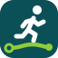
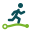
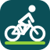
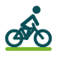
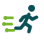

Trazo
Trazo
A. 합류
자전거 길(라임)과 러닝 길(흰색)이 한 점에서 만나 하나의 코스가 됩니다. 두 종목과 함께 달리는 커뮤니티를 한 번에 보여줍니다.
merge.svg · merge-light.svg
서비스 색(딥 틸 #0B4F57 · 라임 #8FCE3A)은 그대로 두고 모양만 바꾼 시안입니다. 크기별(128·48·32·16px)과 글자 조합으로 비교하세요.
자전거 길(라임)과 러닝 길(흰색)이 한 점에서 만나 하나의 코스가 됩니다. 두 종목과 함께 달리는 커뮤니티를 한 번에 보여줍니다.
merge.svg · merge-light.svg
400m 트랙을 돌던 선(훈련)이 트랙을 벗어나 바깥 길(코스)로 뻗어 나갑니다. 트랙 지도·페이스 계산기 같은 훈련 기능과 코스 만들기를 잇습니다.
track-loop.svg · track-loop-light.svg
한 획으로 그린 고도 그래프 꼭대기에 깃발을 꽂았습니다. 오르막을 확인하고 목표를 세워 훈련하는 느낌입니다.
elevation.svg · elevation-light.svg
Trazo의 T. 가로획은 지도 위에 찍은 두 점, 세로획은 그 사이를 구불구불 이어 가는 실제 경로입니다. 작은 크기에서도 글자로 읽힙니다.
route-t.svg · route-t-light.svg
지도 핀 안에 오르내리는 길을 넣었습니다. "어디서, 어떤 길을 달릴지"를 한 아이콘에 담아 지도 서비스라는 점이 가장 분명하게 보입니다.
pin-ridge.svg · pin-ridge-light.svg
산길을 지그재그로 오르는 헤어핀 길을 한 획(trazo)으로 그렸습니다. 아래에서 출발해 위에서 끝나 성장·훈련의 방향감을 줍니다.
switchback.svg · switchback-light.svg
세 갈래 길이 하나의 순환 코스를 함께 그립니다. 각자 만든 코스를 공유하고 함께 달리는 커뮤니티를 강조한 시안입니다.
crew.svg · crew-light.svg


Trazo Trazo앞으로 기울어 달리는 러너 아래로 라임색 코스가 출발점에서 도착점까지 이어집니다. "내가 만든 길을 달린다"를 가장 직접적으로 보여줍니다.
runner-route.svg · runner-route-light.svg


Trazo Trazo자전거를 탄 라이더가 라임색 코스 위를 달립니다. 바퀴와 길을 단순한 선으로 그려 작은 크기에서도 자전거로 읽힙니다.
rider-route.svg · rider-route-light.svg
자전거 바퀴이자 육상 트랙인 고리 안을 러너가 달립니다. 라임 고리는 아직 다 그리지 않은 코스(획)여서 "자전거·러닝·트랙 훈련"을 한 기호로 묶습니다.
ring-runner.svg · ring-runner-light.svg

Trazo Trazo러너 뒤로 남는 속도선이 곧 지도 위 코스 선입니다. 점으로 끝나는 선은 찍은 경유점을 뜻해 "달리면서 그리는 코스"를 표현합니다.
speed-lines.svg · speed-lines-light.svg
고도 그래프 꼭대기에서 두 팔을 든 사람. 오르막을 이겨 낸 성취감과 훈련의 목표를 보여줍니다.
summit.svg · summit-light.svg
두 사람(라임·흰색)이 한 코스의 양 끝에서 서로를 향합니다. 코스를 공유하고 함께 달리는 커뮤니티를 사람 중심으로 표현했습니다.
together.svg · together-light.svg